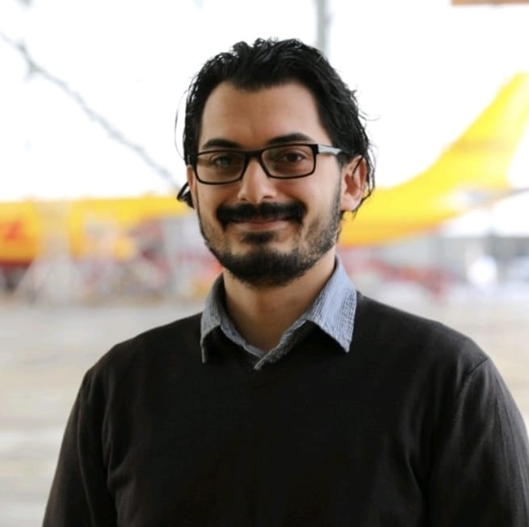

Българският институт за международна политика (БИМП) е независимо, нестопанско сдружение, посветено на анализ, политически размисъл и международен диалог.
Основан през юли 2025 г. в гр. Варна, Институтът предоставя платформа както за начинаещи анализатори, така и за утвърдени експерти да допринасят смислено към обществения дебат.
Нашата цел е да насърчаваме балансирано и критично мислене по политически въпроси в България, Европа и света.
Изданието „Региони“ e основната публикация на БИМП. ISSN: 3033-2516.
Публикувайте в БИМП
Имате качествен анализ или коментар? Приемаме текстове на български и английски за политиката в България, Европа и света.
Нашите експерти



Многоезична идентичност
Пълното име на института се появява на множество езици, което отразява неговия международен и плуралистичен характер:
Български: Български институт за международна политика
Английски: Bulgarian Institute for International Politics
Немски: Bulgarisches Institut für Internationale Politik
Африканс: Bulgaarse Instituut vir Internasionale Politiek
Унгарски: Bolgár Nemzetközi Politikai Intézet
Румънски: Institutul Bulgar pentru Politică Internațională
Нидерландски: Bulgaars Instituut voor Internationale Politiek
Френски: Institut Bulgare de Politique Internationale
Испански, португалски, галисийски: Instituto Búlgaro de Política Internacional
Хърватски: Bugarski institut za međunarodnu politiku
Италиански: Istituto Bulgaro di Politica Internazionale
Арабски: المعهد البلغاري للسياسة الدولية
Украински: Болгарський інститут міжнародної політики
Албански: Instituti bullgar për politikë ndërkombëtare
Словашки: Bulharský inštitút pre medzinárodnú politiku
Чешки: Bulharský institut pro mezinárodní politiku
Сесото: Setsi sa Bulgaria sa Lipolotiki tsa Machaba
Нашето лого
Нашето мото
„Всеки един има дълг да върши възможното.“ – Васил Априлов
Васил Априлов (1789–1847) е български възрожденски просветител, общественик и един от създателите на светското образование в България. Неговите думи отразяват убеждението, че личната отговорност започва с това да правим възможното – независимо колко малко – в служба на знанието и обществото.
Цитатът е от книгата 500 мисли на бележити българи, издадена от Българска история.
Проектите на БИМП
Освен аналитичните статии, БИМП развива собствените си инициативи и проекти за регионален диалог.
Подкрепете независимия анализ
БИМП е изцяло независимо сдружение с нестопанска цел. Разчитаме на доброволна подкрепа и гражданска ангажираност.
Ако желаете да подкрепите нашата мисия, можете да:
- Споделяте нашите статии и анализи
- Изпратите собствена статия или коментар
- Се присъедините към нашата експертна мрежа
📩 Свържете се с нас на biip@mailfence.com, за да се включите.
Партньорства
БИМП си партнира с организации в България и чужбина, които споделят нашите ценности за качество и професионализъм.


Пресцентър
Журналисти и медии могат да намерят лога, ключови факти и медиен контакт в нашия пресцентър.
📁 Отворете пресцентъра
БИМП уважава личната неприкосновеност. На този сайт не се използват бисквитки и не се събират лични данни.
Единен идентификационен код: 208390337.